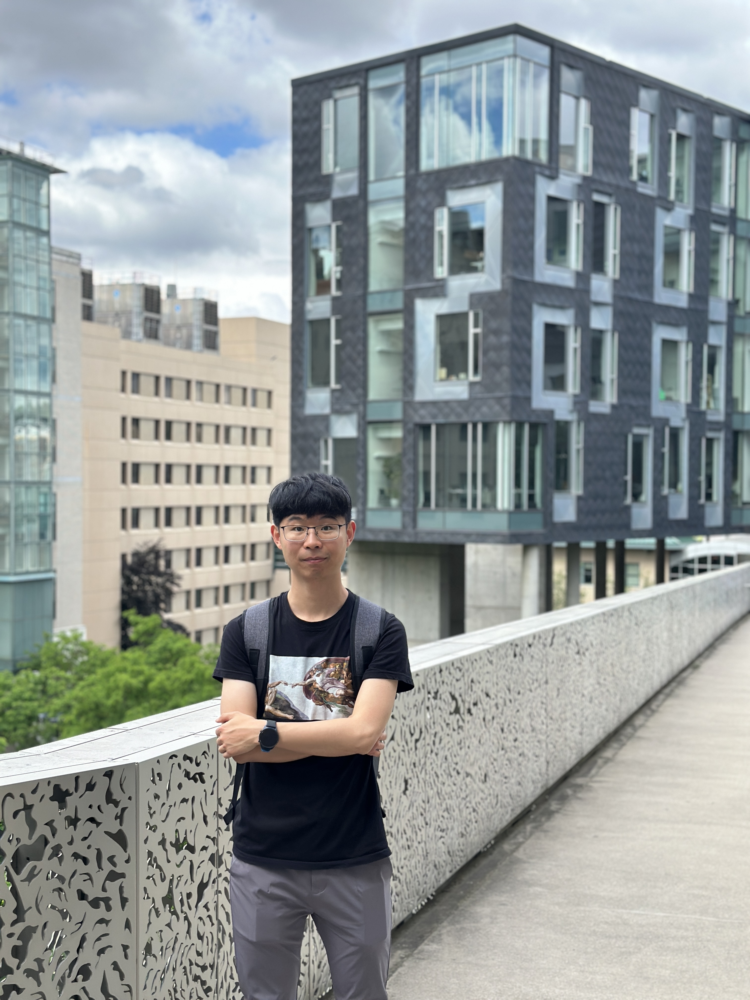

I am a PhD student (since fall 2020) at the Department of Physics of Indiana University, advised by Prof. Jon Urheim.
Currently I am involved in the Deep Underground Neutrino Exmperiment (DUNE), a next-generation accelerator neutrino experiment. My research centers on the Photon Detecion System and ProtoDUNEs, the prototype detectors for DUNE Far Detectors. Prior to Indiana University, I obtained my B.S. from the Department of Modern Physics, University of Science and Technology of China (USTC) [2016 - 2020]. (Download my CV)